Bienvenue dans "ECE World", un passionnant parc d'attraction sur le thème des chevaliers que j'ai créé en utilisant le langage C avec la bibliothèque Allegro 4.4.3. Ce projet a été développé dans le cadre de mes études à l'École Centrale d'Électronique en réponse à un cahier des charges visant à satisfaire un jury.
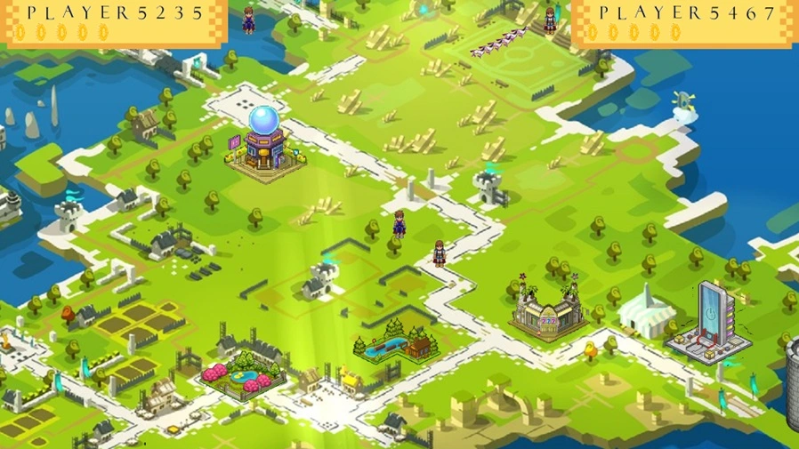
Concept et Gameplay
"ECE World" offre une expérience unique où deux joueurs se déplacent tour à tour sur une carte inspirée du style de "Dofus". Chaque joueur choisit parmi neuf attractions passionnantes, dont des courses de chevaux, un tape-taupe, un Guitar Hero médiéval, la pêche au canard, un casino, la traversée de la rivière, et le célèbre jeu Snake.
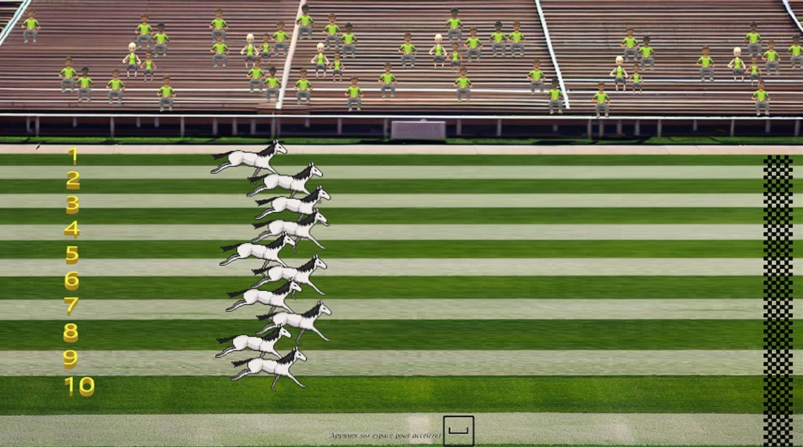
Objectif du Jeu
Le but ultime est de remporter des pièces en excellant dans les différents mini-jeux proposés. La carte est dynamique, offrant une exploration constante, et la gestion de la charge et la sauvegarde des meilleurs scores et de la partie en cours sont intégrées pour une expérience de jeu optimale.
Contexte
Ce projet, réalisé dans le cadre de mes études, a été conçu pour répondre à des critères stricts définis par le cahier des charges. Mon objectif était de créer le meilleur jeu de la promo 2027 Ingénieur 1 à l'École Centrale d'Électronique, et "ECE World" en est le fruit.
Je suis fier de partager ce projet qui illustre non seulement mes compétences en programmation C et l'utilisation d'Allegro, mais aussi ma capacité à répondre à des exigences spécifiques et à livrer un produit de qualité.
Scrabble
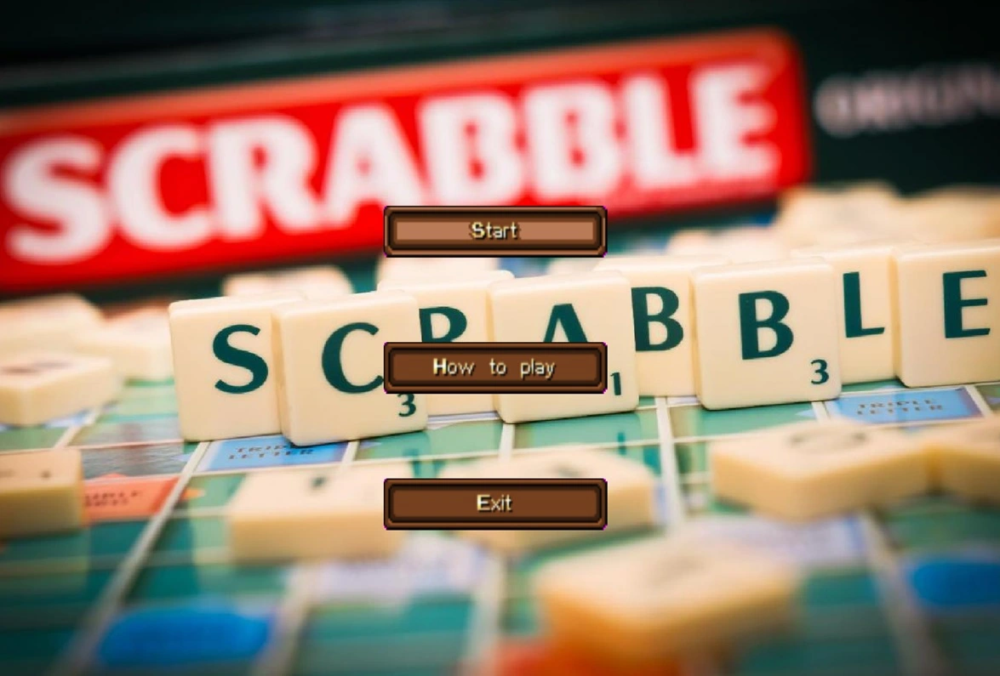
Concept
Bienvenue dans la version informatique du célèbre jeu de plateau, le Scrabble ! Je suis fier de présenter ce projet que j'ai développé dans le cadre de mes études en utilisant le langage C avec la bibliothèque Allegro 4.4.3.
Description du Jeu
Le Scrabble informatique propose une expérience fidèle au jeu de plateau classique. De 2 à 4 joueurs peuvent participer, plaçant astucieusement les lettres sur un plateau fixe de Scrabble à l'aide de la souris. Le but du jeu est simple : former des mots, les valider à l'aide d'un dictionnaire intégré, et accumuler des points. Une fois le mot validé, le score est calculé, et le tour passe au joueur suivant.
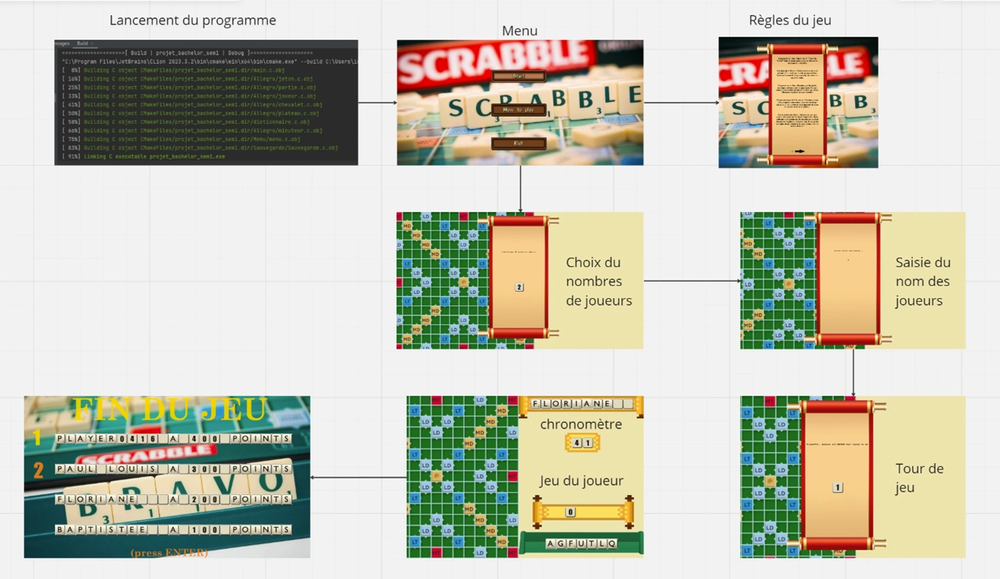
Caractéristiques Clés
Plateau Fixe : Le jeu se déroule sur un plateau de Scrabble classique, offrant une expérience authentique.
Calcul Automatique du Score : Les points sont automatiquement calculés en fonction des lettres utilisées et de leur position sur le plateau.
Validation avec Dictionnaire : Pour garantir la validité des mots, le jeu inclut une fonction de vérification basée sur un dictionnaire intégré.
Contexte du Projet
Ce projet a été réalisé dans le cadre de mes études, répondant à un cahier des charges exigeant. Bien que l'utilisation d'une version console aurait été suffisante, j'ai cherché à surpasser les attentes en créant une expérience visuelle plus immersive. Le résultat a été un succès, remportant même le titre de meilleur jeu de la promotion 2026 en Bachelor 1 à l'École Centrale d'Électronique (ECE).
N'hésitez pas à explorer ce projet captivant, qui représente non seulement ma passion pour le développement de jeux, mais aussi mon engagement à exceller dans mes études.
Labyrinthe
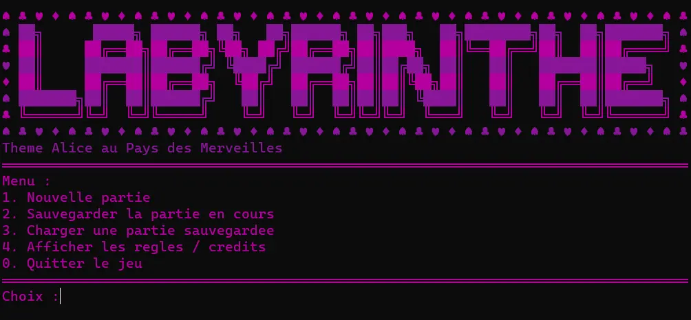
Concept
"Labyrinthe" est une adaptation numérique du célèbre jeu de plateau. Conçu pour 2 à 4 joueurs, le jeu propose une expérience captivante où les participants se lancent à la recherche de trésors cachés sur un plateau de labyrinthe. Les règles officielles du jeu de société sont fidèlement reproduites, offrant ainsi une expérience familière et engageante.
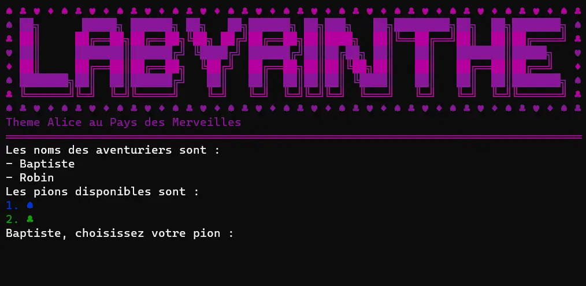
Développement
Ce projet, entièrement codé en langage C dans le terminal, met en œuvre une approche élégante du jeu de plateau. La carte du labyrinthe est fixe, créant un défi stratégique pour les joueurs qui doivent naviguer habilement pour atteindre leurs objectifs.
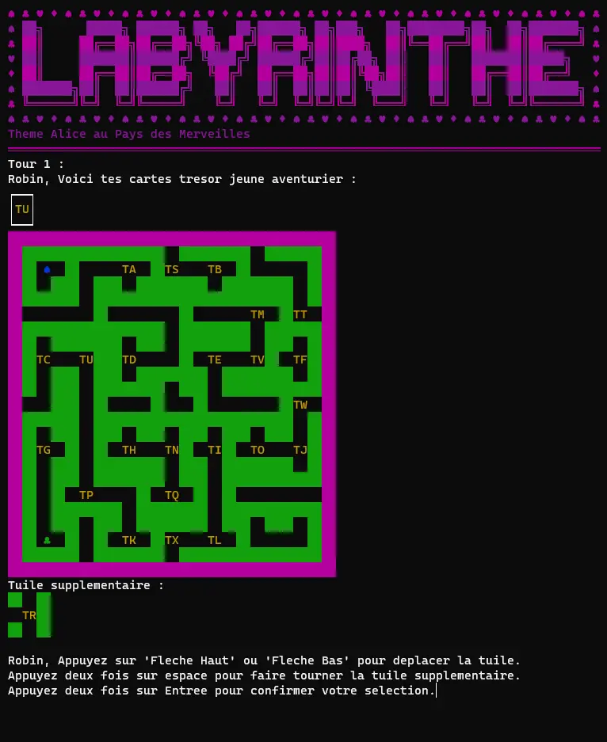
Contexte
"Labyrinthe" a été créé dans le cadre de mes études, répondant à un cahier des charges spécifique. Le jeu va au-delà des attentes du projet académique, aspirant à être le meilleur jeu de la promotion 2027 pour les ingénieurs de première année de l'École Centrale d'Électronique (ECE). Il a été conçu pour satisfaire un jury exigeant, démontrant ainsi mon engagement envers l'excellence dans mes réalisations académiques.
Cardiogramme
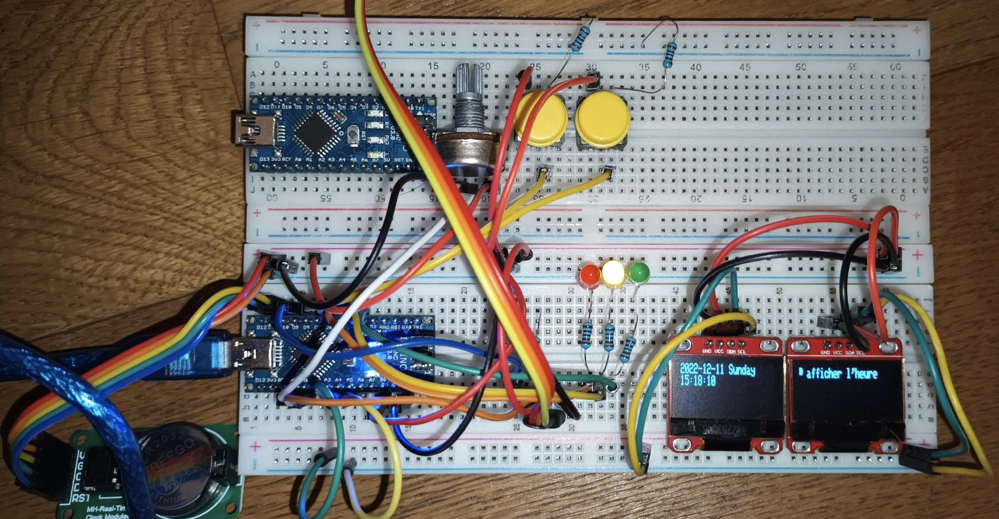
Objectif
J'ai conçu, monté et codé un cardiogramme électronique complet qui va au-delà de la simple mesure du rythme cardiaque. Ce dispositif utilise un Arduino Nano, un écran OLED, un capteur Iduino SE049, une RTC MH-Real-Time Clock, un buzzer, des LEDs, et d'autres composants pour réaliser un cardiogramme interactif.
Fonctionnalités
Le projet permet de capter en temps réel le rythme cardiaque, affiche une courbe représentant l'activité cardiaque, et indique l'heure sur un écran OLED. Trois LEDs de couleurs différentes servent à signaler si le rythme cardiaque est faible, normal, ou trop élevé. Le système intègre une analyse du rythme cardiaque en fonction de ces indicateurs visuels et sonores.
Conception Matérielle
Le dispositif utilise des composants tels qu'un capteur Iduino SE049 pour la mesure du pouls, un écran OLED pour l'affichage des informations, une RTC MH-Real-Time Clock pour la gestion de l'heure, un buzzer pour les alertes sonores, et des LEDs pour les indicateurs visuels. L'ensemble est monté sur une breadboard avec des fils pour assurer la connectivité.
Programmation
Le code, exécuté sur l'Arduino Nano, combine le langage C++ avec les fonctionnalités spécifiques à Arduino. Il permet de capter, analyser et afficher le rythme cardiaque, ainsi que de gérer les fonctions d'affichage de l'heure et des indicateurs visuels.
Cahier des Charges
Ce projet a été réalisé en respectant un cahier des charges strict afin de satisfaire les exigences d'un jury. Il démontre ma capacité à concevoir un système électronique complexe, à intégrer différents composants, et à programmer un microcontrôleur pour répondre à des besoins spécifiques.
Enseignement de l'Électronique
Au-delà de la réalisation pratique, ce projet permet de comprendre au travers d'une application concrète ce qu'est l'électronique. Il allie des concepts théoriques avec des compétences pratiques, illustrant comment des composants électroniques divers peuvent être assemblés pour créer un dispositif fonctionnel.
Synthétiseur
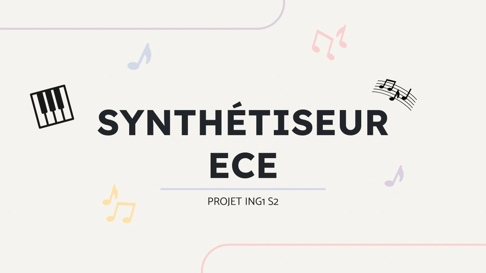
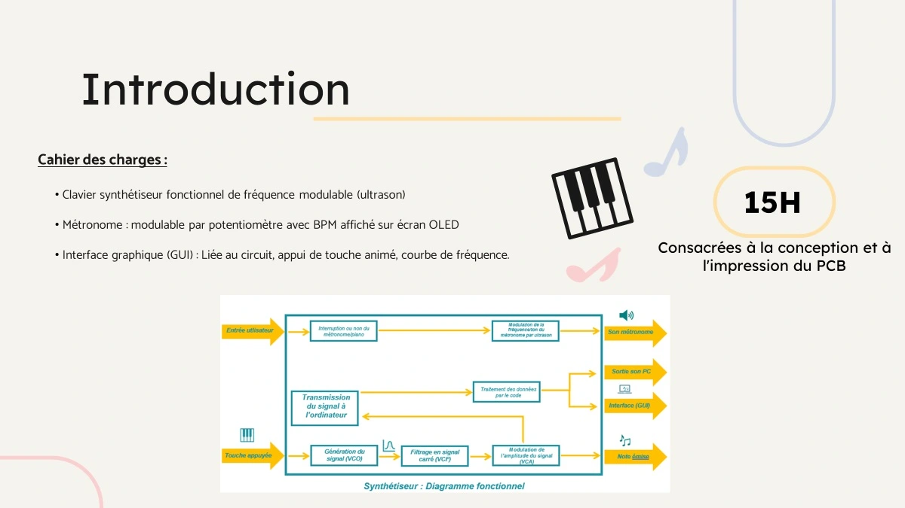
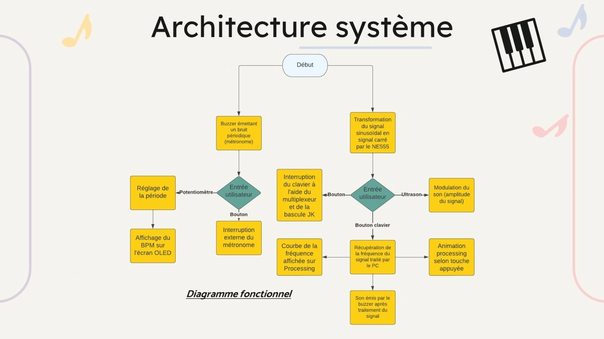
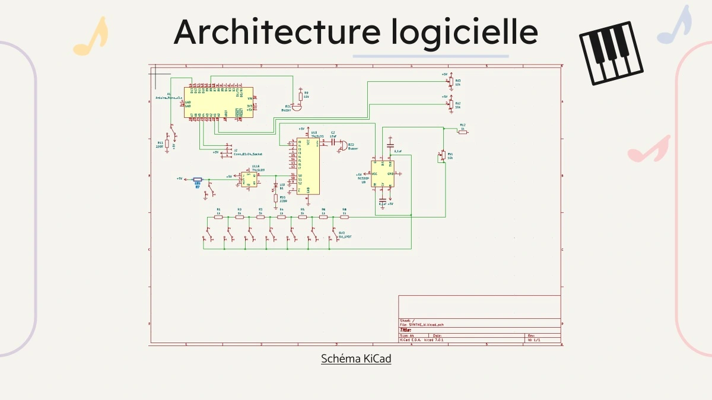
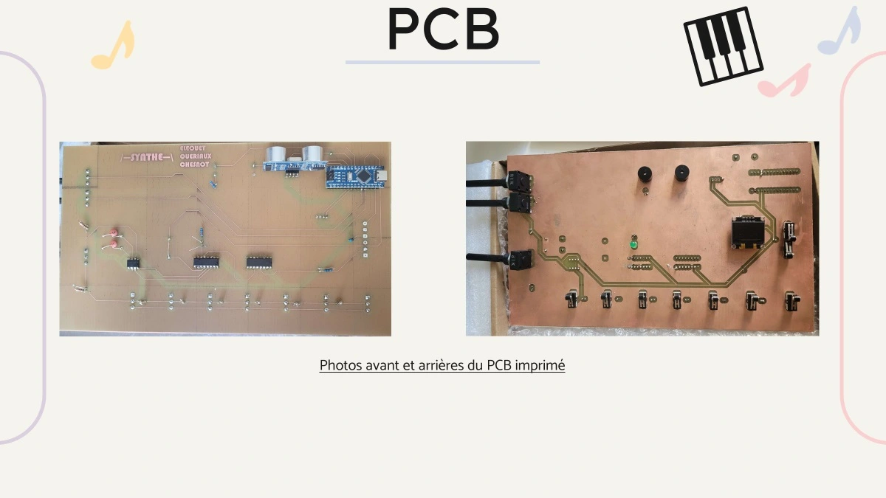
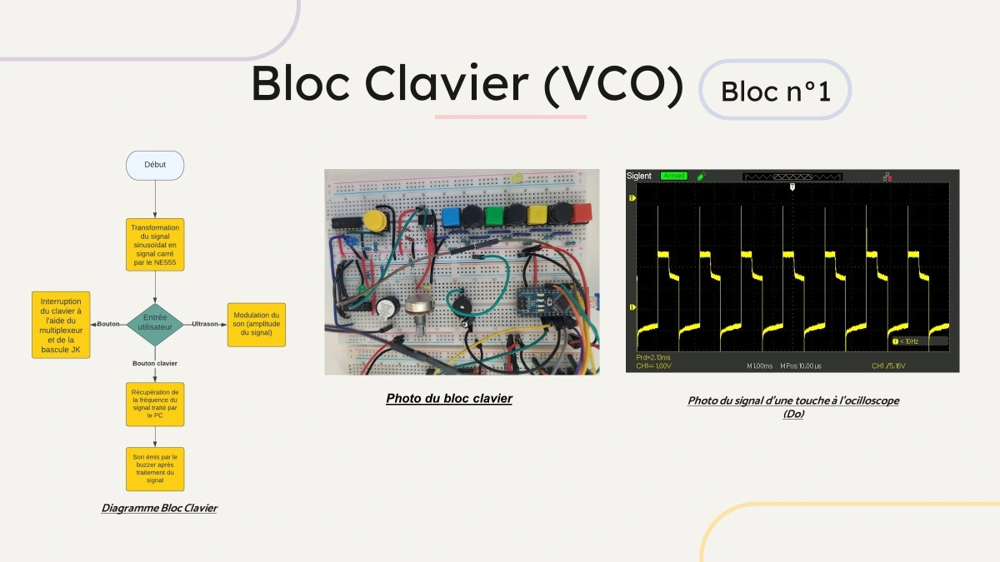
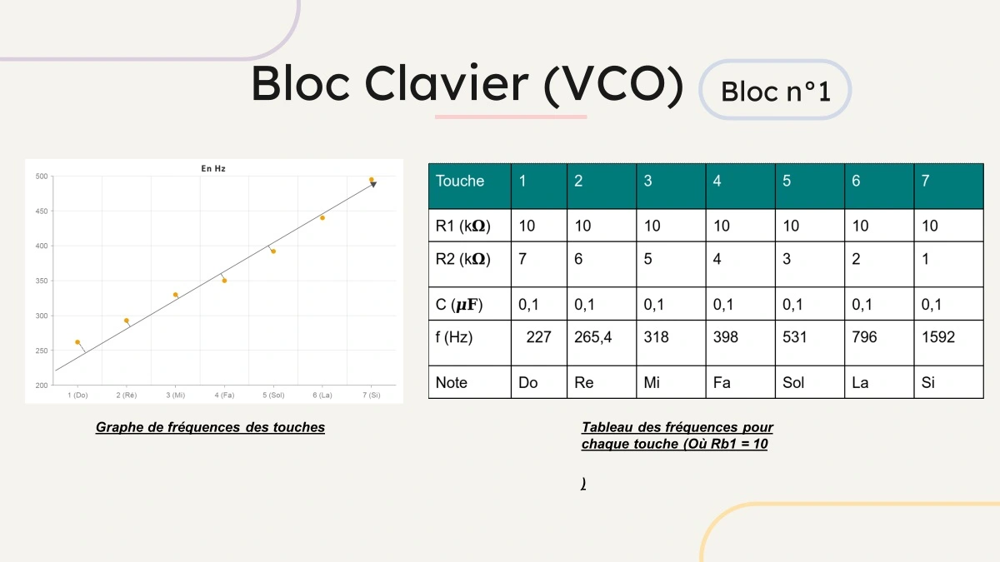
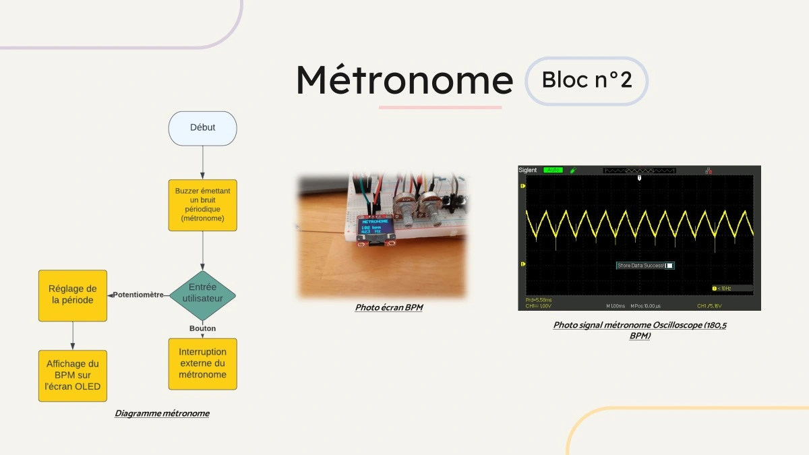
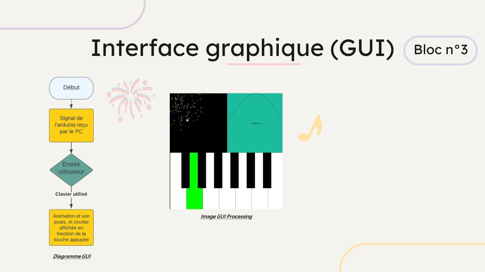
ZebiBot
Objectif
Dans le cadre de ce projet, j'ai entrepris de monter le robot "Picar-B" de Adeept, un kit complet de robotique. L'objectif principal était de développer un programme en Python permettant au robot de suivre des lignes noires de manière autonome et de détecter les obstacles sur son chemin.
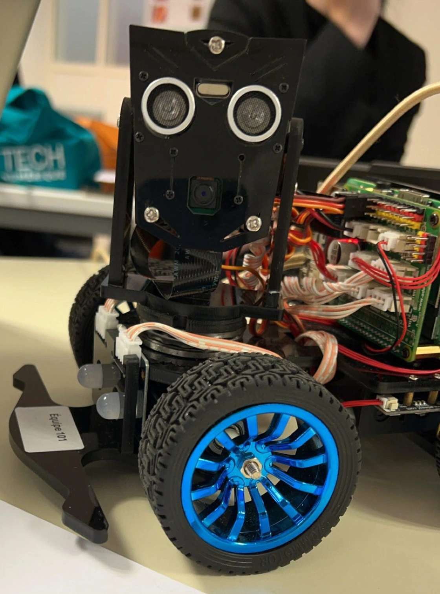
Programmation
Le code, exécuté sur une Raspberry Pi 3, a été développé en Python. Il assure le suivi précis des lignes noires grâce aux capteurs inclus dans le kit, tout en permettant au robot de détecter et d'éviter habilement les obstacles sur son parcours.
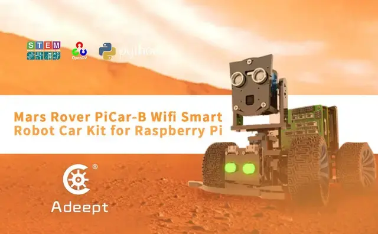
Ce projet m'a offert l'opportunité d'approfondir mes connaissances dans les bases de la robotique. Comprendre le fonctionnement des moteurs, des capteurs et la manière dont la Raspberry Pi orchestre le tout a été une expérience enrichissante


 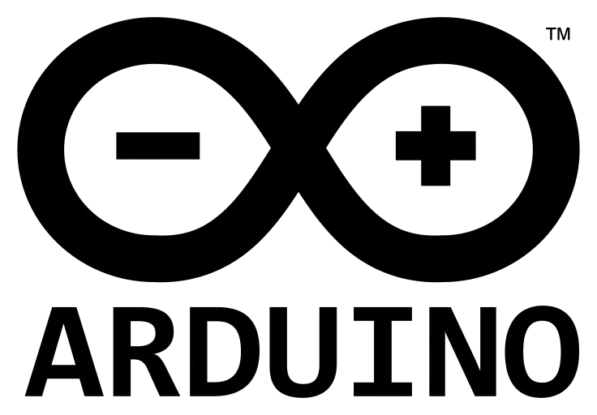
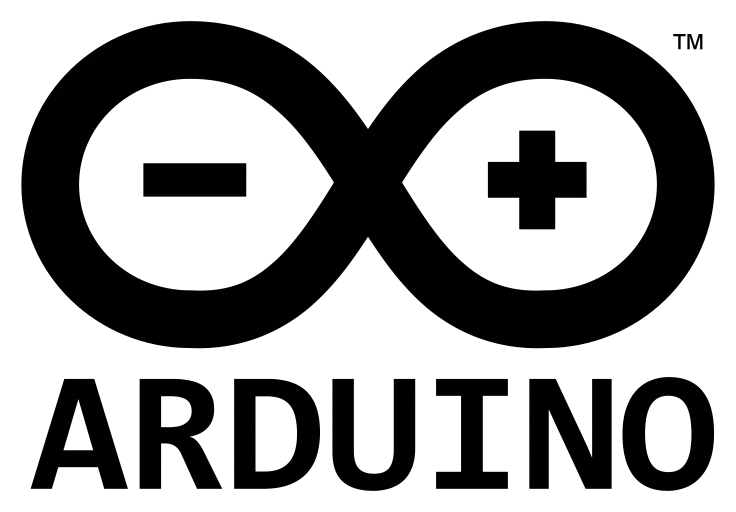